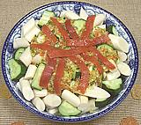

|
Hearts of Palm SaladEuro / American | ||||
| Serves: Effort: Sched: DoAhead: |
6 Salad ** 20 min Yes |
A tart and tasty salad that's a bit different from the usual - always a hit. Taking the heart kills most palms, but commercial production is now all from Clumping Palms that just send up new stems. | |||
|
|
2 14 10 ----- 1/4 2 1/4 1/4 ----- 7/8 1/4 1 1 1/2 ----- |
oz oz --- c T c c --- c T t t t --- |
cans Palm Hearts Cucumber (1) -- Aromatics Green Olives (2) Celery Marinated Pimento Scallions -- Dressing Olive Oil extV Lemon Juice Salt Sugar (opt) Paprika -- Garnish Marinated Pimento |
Make - (20 min)
|